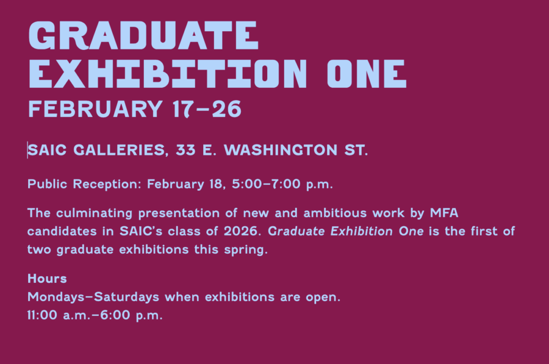

Graduate Exhibition One
Graduate Exhibition One
February 17–26
SAIC Galleries, 33 E. Washington St.
Public Reception: February 18, 5:00–7:00 p.m.
The culminating presentation of new and ambitious work by MFA candidates in SAIC’s class of 2026. Graduate Exhibition One is the first of two graduate exhibitions this spring.
Hours
Mondays–Saturdays when exhibitions are open.
11:00 a.m.–6:00 p.m.